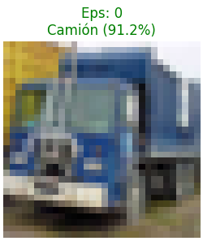
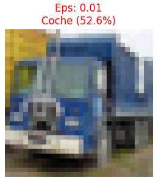
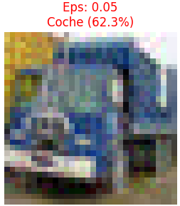
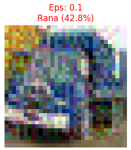
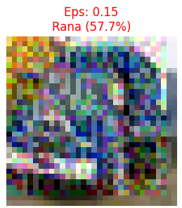

Robustez en Deep Learning
Análisis de vulnerabilidades sobre CIFAR-10
Esteban Masci & Daniel Camps
Rendimiento del Modelo Base
74.40%
Accuracy (Sin Ataque)
CNN
Arquitectura
Modelo basado en Redes Neuronales Convolucionales entrenado con imágenes de 32x32 píxeles. Presenta una alta eficacia en condiciones ideales.
Progresión del Ataque FGSM
Impacto visual y técnico al incrementar la magnitud de la perturbación (ε):

ε = 0
Correcto

ε = 0.01
Indetectable

ε = 0.05
Error de Clase

ε = 0.10
Ruido Visible

ε = 0.15
Crítico
Observamos cómo el Epsilon controla la "fuerza" del ataque. A medida que ε aumenta, el ruido se vuelve más evidente para el ojo humano, pero el modelo vulnerable pierde toda capacidad de clasificación correcta.
Defensa: Entrenamiento Adversarial
- Inclusión de ejemplos perturbados en el entrenamiento.
- Regularización de los gradientes de la red.
- Mayor capacidad de generalización ante ruido malicioso.
Inmunización del Modelo
Análisis de Robustez
La gráfica demuestra la eficacia de nuestra defensa. El modelo robusto (verde) mantiene una precisión útil en rangos donde el modelo estándar (rojo) colapsa totalmente.
Conclusiones
1. La precisión en entornos controlados es una métrica insuficiente para la seguridad real.
2. El entrenamiento adversarial es un pilar fundamental para desplegar IA en sistemas críticos.
3. Logro final: Se ha conseguido salvar un 45% de precisión bajo ataque extremo (ε=0.15).